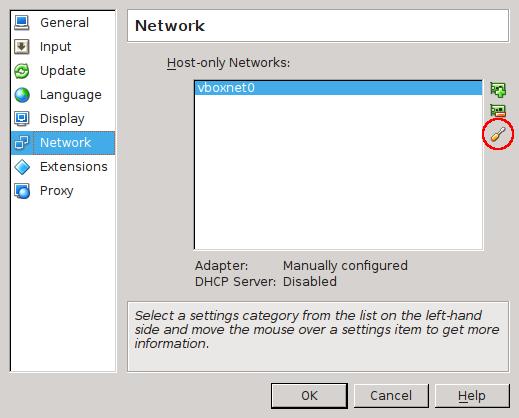
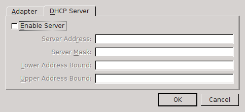
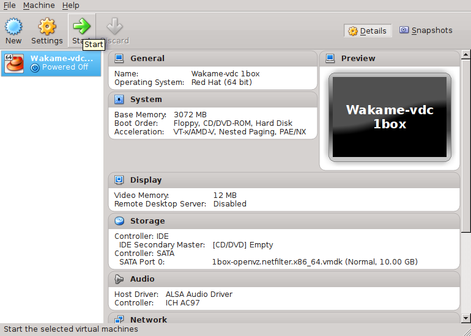

Demo Image
This is a Virtual Box image that contains CentOS 6.4 with Wakame-vdc pre-installed. This is intended for people to get a first introduction to Wakame-vdc with a minimal amount of configuring required.
Download the Wakame-vdc demo image.
Unzipped mp5 sum: 7bc7587a0d60629c87895173b093b3bd
Zipped md5 sum: 41d04365f36cd034ae1f9605e07c189f
Requirements
Any computer with an x86_64 processor capable of running VirtualBox.
What works?
Instances
This is Wakame-vdc’s key functionality. The ability to start and terminate virtual servers which we call instances.
Security Groups
This is Wakame-vdc’s netfilter based dynamic firewall. You can create security groups and place instances in them. These groups have two functions to them.
- Firewall
Users are able to write firewall rules into security groups. This will open specific ports on all instances in the group.
- Isolation
This provides ARP and IP based isolation between instances. Only Instances that are in the same security group will be able to communicate on the network. In other words, instances in group B will look like they don’t exist to instances in group A.
Backups
This allows you to create a new Wakame Machine Image from an existing instance. You will then in turn be able to start new instances of the newly created image.
Load Balancers
A Load Balancer in Wakame-vdc is a special instance that will have HAProxy running in it and can balance network traffic between instances. It’s also capable of doing OpenSSL encryption using Stud.
SSH Key Pairs
We can log into instances over SSH using RSA private/public key pairs. You can let Wakame-vdc create a key pair for you or you can register your own existing public key.
What doesn’t work?
Volumes
Volumes are virtual hard drives that can be attached to and detached from instances at will. It’s essentially a virtual version of USB hard drives that you can pass around and plug into different computers.
You will be able to create and delete volumes but you won’t be able to attach them to instances. That’s because the Wakame-vdc demo image uses OpenVz as the hypervisor for instances. At the time of writing, volumes are not supported in our OpenVz implementation.
Setup
Download and unzip the image.
In VirtualBox, click File and select Preferences.

Click on Network and create a new host-only network.

Now click on the screwdriver icon for host-only network settings.

Set the IPv4 subnet to 10.0.2.2/24. Leave IPv6 fields blank.

Disable the host-only network’s DHCP server.

You’re done with VirtualBox preferences. Now create a new virtual machine.

Set the following settings for name and operating system.

Set the memory size for the VM. 3GB recommended. 1GB minimal.

Select Use an existing virtual hard drive file and browse to the Wakame-vdc demo image that you have downloaded.

You’ve now set up a VirtualBox VM but you still need to do some extra network settings before Wakame-vdc will work right. Select your new VM and click on Settings.

Click Network and enable Adapter 1. Attach it to the Host-only Adapter that you have created above. Make sure to set Promiscuous Mode to Allow All. This will allow us to make network connections to Wakame-vdc instances.

Also enable Adapter 2 and attach it to an Internal Network. Again set Promiscuous Mode to Allow All.

You’re done. Start the Wakame-vdc demo image.

On first boot, the image will take some time to set up several Wakame-vdc services like the MySQL databases.
Usage
You can access Wakame-vdc’s WebUI by surfing to http://10.0.2.15:9000 in a browser of your choice. Javascript needs to be enabled for the WebUI to function. Log into the WebUI with the following credentials.
Username: demo
Password: demo
Before you can start an instance, you will need to create a security group and a key pair. Click on Security Groups in the menu on the left and click on Create Security Group. Choose a name for your group and paste the following rules. These example rules will open ports for ssh, http, dns and ping.
# demo rules for demo instances
tcp:22,22,ip4:0.0.0.0
tcp:80,80,ip4:0.0.0.0
udp:53,53,ip4:0.0.0.0
icmp:-1,-1,ip4:0.0.0.0
Next we’ll create ourselves a key pair. Click on Key Pairs in the menu on the left. There should be a demo key already registered there. This is again a leftover from development that we haven’t had time to remove. Please ignore it.
Click on Create Key Pair. You can either register your own public key here, or have Wakame-vdc create a new one for you by leaving the Public Key field blank.
Now we’re ready to start an instance. Click on Machine Images in the menu on the left. There will be four Wakame Machine Images available here.
- haproxy1d64
This is the Load Balancer image. The fact that it appears in the list of Wakame Machine Images is a bug in the Wakame-vdc demo image. Since this is only a minor issue, we haven’t fixed it yet. Load Balancers are not intended to be started from this image. They should be started from the LoadBalancers option in the menu on the left.
- lbnode1d64
This is an image with a tiny http server on port 80 that returns the instance’s host name. This is intended to demonstrate the load balancer.
- vanilla1d64
- centos1d64
Both of these are simple images with a basic Centos 6.4 in them. The difference is that vanilla1d64 has password authentication enabled and centos1d64 doesn’t. Since no working users are configured for vanilla1d64, these images are essentially the same.
Let’s start an instance of centos1d64 as an example. Select it and click Launch Instance. In the dialog that comes up, choose an Instance Name and an optional Host Name.
Choose an Instance Spec to launch your instance with. Instance Specs define the specifications of your instance such as amount of cpus and memory size. You can choose between the following three:
vz.small:
cpu_cores: 1
memory_size: 256
hypervisor: 'openvz'
quota_weight: 1.0
vz.large:
cpu_cores: 2
memory_size: 256
hypervisor: 'openvz'
quota_weight: 2.0
vz.xlarge:
cpu_cores: 2
memory_size: 1536
hypervisor: 'openvz'
quota_weight: 2.0
You will see the security group you just created in Available Groups. Move it to Launch in so we can put our new instance in it.
Next we need to create a network interface for our instance and attach it to a network. Click the drop-down list next to eth0. You will see a list of many possible networks to attach it to. Choose the network [nw-demo1] demo1. The other networks are leftovers from our development environments and do not work in this image.
The User Data below that is a ambiguous field where you can fill in any metadata that you might want to pass to the image. You would then be able to read that data from any custom software you might have running in there. Right now we don’t have any of that stuff so go ahead and leave it blank.
Finally there’s Network Monitoring. This is a Zabbix based monitoring service. Just leave it disabled for now.
You’re done. Click on Launch.
You will now be able to see the instance when you click on Instances in the menu on the left. You will probably see your instance in the initializing state. This means Wakame-vdc is starting it up and it will take a little while. Even after your instance’s state turns to running, it will still take a little while for the OS inside of it to boot up completely.
If the instance state turns to terminated, that is likely due to a known bug that we have been encountering only in the Wakame-vdc demo image and haven’t had time to fix yet. Just try again. It’s likely that your instance will work the second time around.
You can ssh into the instance using the key pair that you created. They listen on port 22 and you can log in with username root. If your own computer is running Linux, this would be a typical command to log into an instance.
ssh -i /path/to/ssh/key.pem root@10.0.2.100
It’s possible that you will get this kind of message.
@@@@@@@@@@@@@@@@@@@@@@@@@@@@@@@@@@@@@@@@@@@@@@@@@@@@@@@@@@@
@ WARNING: UNPROTECTED PRIVATE KEY FILE! @
@@@@@@@@@@@@@@@@@@@@@@@@@@@@@@@@@@@@@@@@@@@@@@@@@@@@@@@@@@@
Permissions 0744 for '/home/geek/ssh_demo.pem' are too open.
It is recommended that your private key files are NOT accessible by others.
This private key will be ignored.
bad permissions: ignore key: /home/geek/ssh_demo.pem
That means everybody can read your private key and that’s not very private now is it? Change your key’s permissions with the following command.
chmod 600 /path/to/shh/key.pem
Troubleshooting
If you need to do any troubleshooting, you can ssh into the Wakame-vdc demo image with the following credentials. The image’s ip is 10.0.2.15 and ssh is running on the standard tcp port of 22.
Username: centos
Password: centos
Wakame-vdc’s logs are located in the following directory:
/var/log/wakame-vdc/
Wakame-vdc’s configuration files are located here:
/etc/wakame-vdc/
You can perform a large number of CRUD tasks on the Wakame-vdc database using the vdc-manage command line interface. To use to type the following:
[centos@wakame-vdc-1box ~]$ cd /opt/axsh/wakame-vdc/dcmgr/bin/
[centos@wakame-vdc-1box bin]$ ./vdc-manage
vdc-manage>> help
vdc-manage will give you a list of sub commands. You can type any of them followed by help to get more specific usage on them. There is a similar cli for the WebUI.
[centos@wakame-vdc-1box ~]$ cd /opt/axsh/wakame-vdc/frontend/dcmgr_gui/bin/
[centos@wakame-vdc-1box bin]$ ./gui-manage
gui-manage>> help